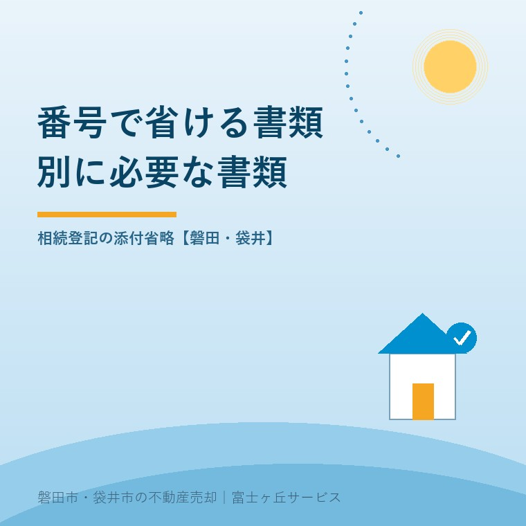
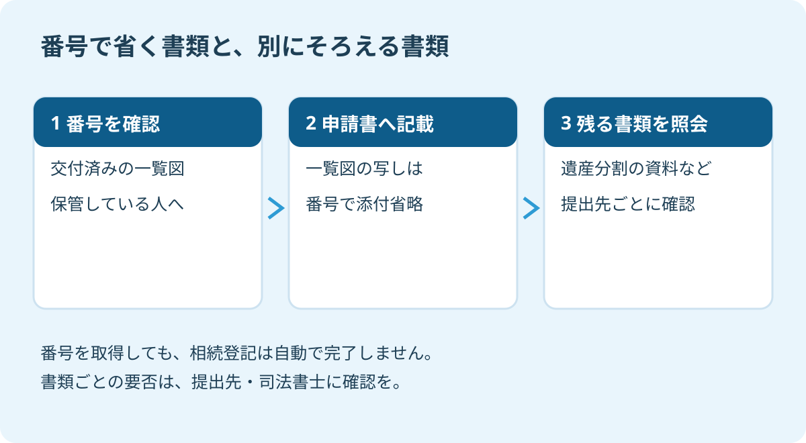

法定相続情報番号で添付省略、2024年開始の手順
2026年9月16日｜カテゴリ：相続登記・売却前の書類

この記事の要点
Q. 法定相続情報番号を書けば、相続登記の書類は省けますか。
2024年4月1日から、登記申請書に法定相続情報番号を記載すると、法定相続情報一覧図の写しの添付を省略できます。遺産分割協議書など必要書類が全部なくなるわけではありません。提出先に残る書類を照会します。磐田市・袋井市・森町では、介護施設の運営から不動産事業を始めた富士ヶ丘サービスのような地域密着の会社に相談する選択肢があります。
相続登記の準備では、役所でもらう紙を増やす前に、既に持っている紙を確かめてください。法定相続情報一覧図の写しを取得済みなら、そこに記載された番号を使い、登記申請で写しの添付を省略できる場合があります。
大石浩之（磐田市／不動産業）です。宅地建物取引士として私は、売主のご家族が「何を何通集めるか」で迷う時間を減らしたいと考えます。ただし、紙が減ることと、相続登記が終わることは別です。売却の段取りでは、この区別を曖昧にできません。
2024年4月から省けるのは一覧図の写し
法定相続情報番号による添付省略は、2024年4月1日から始まった扱いです。港区『ご遺族の方へ 各種手続きのご案内』34頁は、不動産登記の申請等で番号を記載すると、一覧図の写しを添付しなくてよいと案内しています。2026年9月16日に原文を確認しました。
法定相続情報証明制度は、戸籍などを登記所へ提出し、登記官が相続関係を確認する制度です。確認を経て、認証文の付いた法定相続情報一覧図の写しが交付されます。手続きのたびに戸籍の束を出す負担を減らす仕組みで、その写しの添付を番号で省略する方法が加わりました。
意外に感じるかもしれませんが、番号を使う前には相続関係を確認する作業があります。「番号があれば、最初から戸籍を集めなくてよい」という話ではありません。これから制度を利用する人と、交付済みの写しを持つ人では、出発点が違います。
私は、既に取得した資料を繰り返し運ばずに済む点を評価します。家族が別々の場所に住み、原本を郵送して順番待ちをしているなら、書類の受け渡しを一つ減らせます。
そのうえで、説明する側には注文があります。「添付省略できます」だけで終えず、何を省けて何が残るのかまで伝えてほしい。家族にとって必要なのは制度の名前より、次の提出日に持っていく書類の一覧です。

番号が手元にあるか、先に確かめる
法定相続情報番号は、交付された法定相続情報一覧図の写しで確認します。中部地方整備局が掲載する法務局資料も、番号は登記官が一覧図に付す固有の番号と説明しています。相続人申告登記と所有権を移す相続登記は別の手続きですが、番号による添付省略の仕組みを利用できます。
私なら、最初の連絡は家族の中で書類をまとめている人へ入れます。「一覧図はあるか」「誰の相続について取得したものか」「どこに保管したか」の順です。父の相続と母の相続の資料が同じ封筒に入っていたら、亡くなった方の氏名から分けます。
手書きの家系図と、登記官の認証文が付いた一覧図の写しは区別してください。似た図だからといって、家族が作った番号を申請書に書くことはできません。マイナンバーや不動産の番号を転記する手続きでもありません。
まだ一覧図を取得していない場合は、戸除籍謄本等の収集、一覧図の作成、申出、確認・交付という準備があります。港区の資料もこの順序を示しています。取得済みか分からないまま家族全員が動くと、同じ資料を重複して集めることになります。
番号が読めない、交付を受けた写しが見つからない場合は、交付を受けた登記所や依頼した専門家へ照会します。正しい番号を推測で埋めない。親の家の書類と名義を整理する手順と合わせ、まず保管先を一つにまとめるのが私の提案です。
申請書への記載と、残る添付書類を分ける
相続登記で番号を使うときは、登記申請書の添付情報欄への記載を確認します。法務局の制度案内は、この欄に法定相続情報番号を記載する方法を示しています。使う申請書の記載例を確認し、番号を添えても残る書類は何か、提出先に照会してください。
私が家族用に作るなら、確認表は次の形にします。法的な必要書類の確定表ではなく、問い合わせで抜けを作らないための表です。申請内容によって必要な書類が変わるため、空欄は担当者に埋めてもらいます。
| 確認する資料 | 家族が確かめること | 次の動き |
|---|---|---|
| 法定相続情報一覧図の写し | 対象となる相続と番号 | 番号記載による省略を確認 |
| 遺産分割の内容を示す資料 | どの不動産を誰が取得するか | 協議書等の要否を照会 |
| 住所・本人確認等の資料 | 申請人と登記内容の対応 | 別途必要な資料を照会 |
| 代理人へ依頼する資料 | 誰に何を依頼するか | 委任状等を依頼先へ確認 |
法定相続人を明らかにすることと、遺産分割で不動産を取得する人を決めることは別です。一覧図に家族の名前が載っていても、それだけで実家を誰が取得するかまで決まったとは扱えません。協議による登記なら、協議書や印鑑証明書などの確認が別に残ります。
住所を証明する資料の扱いも、一律に「要る」「要らない」と決めないでください。一覧図に記載された内容などによって確認が必要です。番号を使う旨を伝えたうえで、申請全体の添付書類を司法書士や登記所に確認します。
銀行の相続手続きにも、同じ番号だけで済むと広げないことです。港区資料は、各機関で必要書類が異なるため、提出先への照会を求めています。登記用と金融機関用の書類袋を分けると、提出先の指示を混同せずに済みます。
磐田・袋井の実家売却では、担当者まで決める
磐田市・袋井市の実家売却でも、書類の保管先と登記を進める担当者を先に決めるのが私の提案です。港区の資料は全国制度の説明を参照しています。掲載された港区内の相談窓口を、磐田・袋井の提出先として案内するものではありません。
番号を控えただけでは、売却準備は終わりません。私はこう考えます。誰が申請書を用意し、誰が足りない書類を取り、誰が完了を確認するのか。そこまで決まって初めて、売却の日程を組むための材料になります。
例えば、磐田市に実家があり、袋井市の家族が書類を保管しているとします。これは説明用の想定です。私なら、書類を持つ人が一覧図の有無を確認し、登記を担当する人が必要書類を照会し、仲介担当者が売却予定と照らす役割分担にします。家族全員を窓口へ呼ぶことから始めません。
私にも迷いはあります。相続登記のためだけに一覧図を作る手間と、その後の手続きが軽くなる利点を、全ての家族に同じ重さでは勧められません。登記以外にも使う予定があるのか、資料を取得済みなのかを先に聞きたい。便利な制度でも、作業を一つ増やすだけなら順番を考えます。
自分で申請するか依頼するかを迷う場合は、相続登記を自分でする場合と司法書士へ頼む場合の整理も参考になります。申請の期限は番号取得とは別に管理し、相続登記の期限を確認する記事と合わせて確認してください。
今日の確認は、提出先に書類一覧を照会すること
今日できる確認は、法定相続情報一覧図の有無を調べ、番号を使う前提で残る書類を提出先へ照会することです。問い合わせ前に、家族の中の連絡担当を一人決めます。
- 交付済みの一覧図があるか、対象の相続と保管先を確認する。
- 申請方法と番号の記載位置を確かめ、残る書類を一覧にする。
- 書類を集める人、申請する人、完了を確認する人を決める。
富士ヶ丘サービスは、磐田・袋井に根ざして介護と不動産を一体で相談できる窓口を設けています。親の施設入居や相続を経て資料が散らばった場合も、家族が困らない売却のために整理から支えます。私は、売出日を急いで決める前に、名義と書類の担当者を確かめるよう案内します。税務・登記・相続の個別判断は専門家に確認を。
よくある質問
契約や申請の準備で確かめたい疑問に答えます。
- 法定相続情報番号は、どこで確認しますか。
- 交付済みの法定相続情報一覧図の写しに記載された番号を確認します。マイナンバーや不動産の番号を代わりに書くものではありません。家族や依頼した専門家が一覧図の写しを保管していないか探し、見つからなければ交付を受けた登記所へ照会してください。番号を推測して申請書に埋めることは避けます。
- 番号を書けば、遺産分割協議書も不要ですか。
- 法定相続情報番号だけで、遺産分割の内容まで証明できるわけではありません。今回の添付省略は、法定相続情報一覧図の写しに関する扱いです。遺産分割による登記で必要な協議書や印鑑証明書などは、相続の内容に応じて別に確認します。税務・登記・相続の個別判断は専門家に確認を。
- 番号を取得すると、実家の相続登記も終わりますか。
- 法定相続情報証明制度を利用しても、不動産の名義が自動で相続人に変わることはありません。実家の売却準備では、相続関係を証明する資料の取得と、名義を移す登記の申請を別の作業として管理します。申請の完了と登記内容まで担当者に確かめてください。登記や相続の個別判断は司法書士などの専門家に確認を。

この記事を書いた人：大石浩之（磐田市／不動産業・宅地建物取引士）
富士ヶ丘サービス株式会社。介護施設の運営から不動産事業を始め、磐田市・袋井市・森町で、介護と相続、実家の売却を一体で相談できる窓口を設けています。家族が困らない売却のため、資料と現地の条件を一件ずつ整理します。著者プロフィール
本記事は2026年9月16日時点の公開情報と筆者の意見です。制度・数値・手続きは変更されることがあります。税務・登記・相続の個別判断は税理士・司法書士などの専門家に確認を。契約の効力や解除の可否は、契約書と経緯を示して弁護士に確認してください。